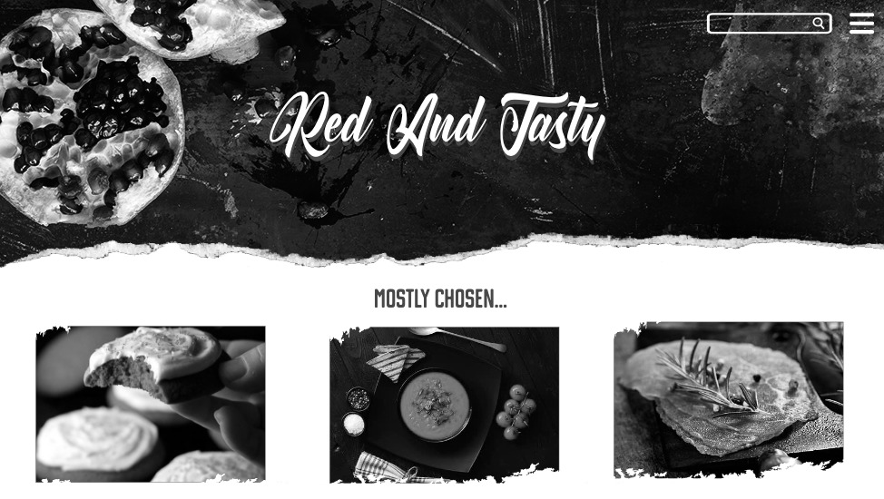

Grid & Kleur
"Voor het vak Grid&Kleur kreeg ik een kleur aangewezen, namelijk de kleur 'rood'. Deze kleur heb ik moeten onderzoeken en uiteindelijk om moeten zetten naar een interface. Ik heb ervoor gekozen een website te maken die recepten van rode gerechten bevat. Hierbij heb ik vooral gekeken naar professionle 'food photographie' en heb ik mijn site ook vooral op deze foto's gericht".